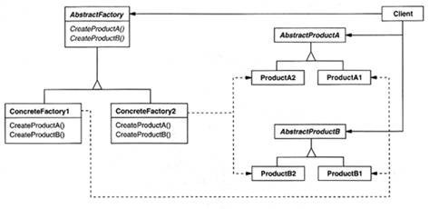

意图：
提供一个创建一系列相关或相互依赖对象的接口，而无需指定它们具体的类 。
别名：
Kit
结构：

代码示例：
AbstractFactory类
public abstract class AbstractFactory {
public abstract AbstractProductA createProductA();
public abstract AbstractProductB createProductB();
}
ConcreteFactory类
public class ConcreteFactory1 extends AbstractFactory {
@Override
public AbstractProductA createProductA() {
return new ProductA1();
}
@Override
public AbstractProductB createProductB() {
return new ProductB1();
}
}
public class ConcreteFactory2 extends AbstractFactory {
@Override
public AbstractProductA createProductA() {
return new ProductA2();
}
@Override
public AbstractProductB createProductB() {
return new ProductB2();
}
}
AbstractProduct类
public abstract class AbstractProductA {
}
public abstract class AbstractProductB {
}
public class ProductA1 extends AbstractProductA {
}
public class ProductA2 extends AbstractProductA {
}
public class ProductB1 extends AbstractProductB {
}
public class ProductB2 extends AbstractProductB {
}
Client类
public class Client {
public static void main(String[] args) {
AbstractFactory factory1 = new ConcreteFactory1();
AbstractFactory factory2 = new ConcreteFactory2();
AbstractProductA productA1 = factory1.createProductA();
AbstractProductA productA2 = factory2.createProductA();
AbstractProductB productB1 = factory1.createProductB();
AbstractProductB productB2 = factory2.createProductB();
}
}
缺点:
难以支持新种类的产品，解决这个缺点的方法很多。
适用性:
在以下情况可以使用Abstract Factory模式
- 一个系统要独立于它的产品的创建、组合和表示时。
- 一个系统要由多个产品系列中的一个来配置时。
- 当你要强调一系列相关的产品对象的设计以便进行联合使用时。
- 当你提供一个产品类库，而只想显示它们的接口而不是实现时。
相关模式：
Abstract Factory类通常用工厂方法（Factory Method）实现，但它们也可以用Prototype实现。一个具体的工厂通常是一个单件（Singelton）。